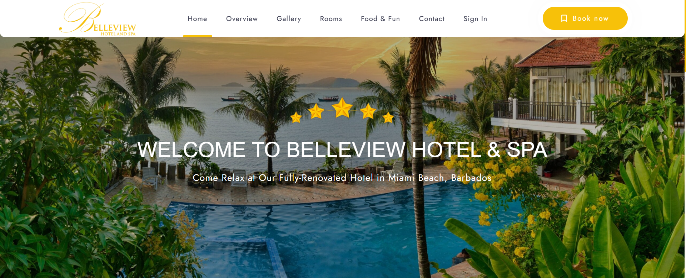

Another major group-based course which centralizes on teamwork and collaboration. This course is not only dependent on teamwork, but it is set up in a manner where two different majors intersect which can cause a bit of confusion for most. The goal of this course is to create a working solution for a company, this must include a networking aspect as well as the software aspect. It heavily focuses on planning and setting targets. I was the leader for my group, and it was my task to figure out the strength of my colleagues and assign them roles based on that. I was also required to do a lot of future planning in order to ensure that everyone was aware of what should be happening and who should be pursuing certain tasks.
Undertaking this course certainly improved my collaboration skills as well as my planning skills. Although it did help with my technical skills, but it was strongly focused on building soft skills, because in order to deliver this project you are required to have people skills and leadership skills. It taught me how to realize when someone is struggling and how to quickly address the situation so they can complete their tasks on time.
The project was centered around using various technologies such as networking, databases, and development skills. It also required me to do a lot of analytical thinking to understand how my team would go about completing the required deliverables. I particularly gained experience using SQL server because my main role was assigned to the development of the database.
